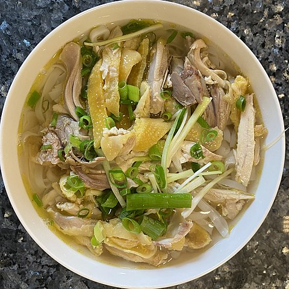

Chicken Pho

Ingredients
Aromatics
- 2 medium white or yellow onions, roasted
- 20g fresh ginger, roasted
Spices
- 2 tbsp coriander seeds
- cinnamon stick, approximately 2 inches
- 2 star anise pods
Soup
- 1 whole chicken, cut in half
- 16 c water
- 21/2 tbsp salt
- 2 tbsp sugar
- 2 tsp MSG or 2 tbsp vegetarian seasoning,optional
Accoutrements
- bean sprouts
- Thai basil
- lemon, sliced into wedges
- ngo gai (culantro), optional
- sliced jalapenos, optional
- hoisin sauce
- Sriracha
Instructions
Aromatics and spices
- On a sheet pan, roast the aromatics in the middle rack of an oven on 375°F to 400°F for 15-30 minutes or until dark brown but not blackened.
- Wrap the spices in foil and bake 350°F for 5 minutes (or roast on a pan medium heat until lightly browned and aromatic).
Chicken pho
- Add the aromatics, spices, and all soup ingredients into a large stock pot and bring to a boil on high heat. Once it hits a boil, lower the heat to maintain a low boil and cook the chicken for 25-40 minutes until the chicken is cooked all the way through. You can use a thermometer to make sure the internal temperature reads 165°F (or the juices run clear when you cut into the deepest part of the chicken).
- Remove the chicken once done and rinse under cold water for one minute to cool. This will prevent the chicken from getting dark. Once the chicken has cooled, shred the meat into bite-sized pieces.
- Cook the rice noodles according to package instructions only just before you’re ready to serve it. Cooking the noodles usually take about 5 minutes after boiling the water.
- To assemble, start with portioning the noodles into a bowl, and then add the soup, shredded chicken, and accoutrements on top. The proportions of this entire recipe is purely a personalized one, but check the photos as a guide.
Return to main page